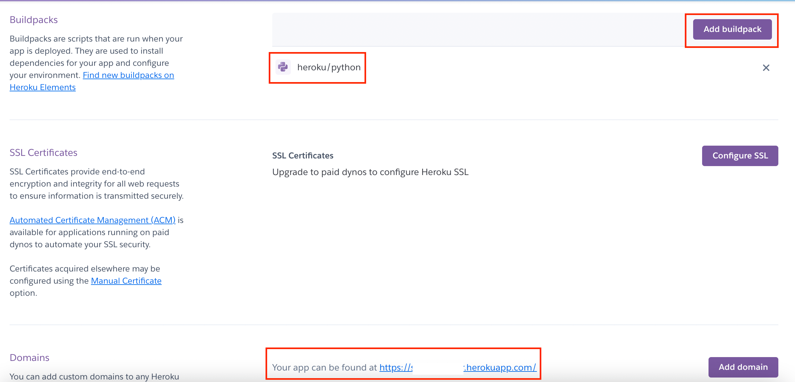

Hosting Your Telegram Bot For Free On Heroku with Github Repo
Learn the tips and tricks!


Introduction
Hello! In this article, I will be sharing more about how I hosted my Telegram Bot on Heroku for free! It is actually a fairly simple process, but when I first attempted to host it, I needed to make some changes to the code and code structure. I made a couple of mistakes along the way and I documented them here so that you won’t fall for the same traps! So let’s jump right in.
Content Page
Edits to the script
To better showcase the changes I had to make with my telegram script, I will be using a simple telegram bot that has close to no functionality. Here is the code
from telegram.ext import Updater, CommandHandler
TOKEN = “your_token”
def start(update, context):
context.bot.send_message(chat_id=update.effective_chat.id, text= “hello world”)
def help(update, context):
context.bot.send_message(chat_id=update.effective_chat.id, text= “no help for you! ha!”)
def main():
updater = Updater(token= TOKEN, use_context=True)
dispatcher = updater.dispatcher
start_handler = CommandHandler('start', start)
help_handler = CommandHandler('help', help)
dispatcher.add_handler(start_handler)
dispatcher.add_handler(help_handler)
updater.start_polling()
updater.idle()
if __name__ == "__main__":
main()
As you can see from the line of code (“updater.start_polling()”), I am using the polling method. Polling is a good way for testing telegram bots out on your local computer but this method is highly not recommended. Not only is polling resource heavy and inefficient but heroku also does not support polling. The alternative would instead be using webhooks. Don’t panic if you have been using polling because we would only need to make some minor changes.
Click on this article if you are interested to find out more about webhooks and the differences between polling and webhook methods. Well, back to the code!
The first change I made was to import the os package as such
import os
This module is a python standard library package (so you don’t need to download it with pip) and it provides us with functions to interact with the Operating System (OS) such as creating or removing a folder.
Next we need to set a port as such
PORT = int(os.environ.get('PORT', 13978))
I added this line of code below the TOKEN variable declaration so the code would look neater with all the global variables together. The common default port is 5000, but I read that there have been some issues with heroku and port 5000, so I used port 13978 instead.
The last change to the code to replace the line “updater.start_polling()” with
updater.start_webhook(listen="0.0.0.0",
port=PORT,
url_path=TOKEN)
updater.bot.setWebhook('https://your_app.herokuapp.com/' + TOKEN)
This sets up the webhook and it listens on ‘0.0.0.0’ address and not ‘127.0.0.1’. For the url_path, the python-telegram-bot documentation recommends using your token, so no one can send fake updates to your bot. As for the “updater.bot.setWebhook()”, the url used is the actual webhook url. This will be generated later on by heroku.
Heroku requirements
heroku and python icons
There are 3 main requirements that heroku needs in order to host the telegram bot. Firstly, change the name of your main script to bot.py. Mine was originally called main.py and heroku couldn’t locate the main script.
Secondly, we need a requirements.txt file. This file contains all the dependencies and their versions. This is so that heroku can install the correct versions of the modules we are using for the telegram bot. The file should look something like this
python-telegram-bot==12.7
pandas==1.3.0
A quick way to figure out what mods you need (no need for standard library ones) is to cd into bot.py and use this command in the terminal
pip freeze > requirements.txt
Essentially, pip freeze returns all the external dependencies and then write it into the file requirements.txt. If this seems a little confusing, you can also manually do it by checking the imports in bot.py and finding their latest versions from pypi.
Thirdly, we need a Procfile. Do ensure that the name of the file is simply “Procfile”, without any file extension like txt or py added behind. The Procfile contains the commands that we want heroku to execute on startup, much like the commands we run in our terminal when we want to run our bot. The Procfile should only have 1 line and looks like this
web: python3 bot.py
Web refers to the type of dyno, which is like a server in heroku. The line means in the web dyno, use python3 and run the file bot.py.
Those are the 3 requirements that heroku asks of us. Another few important pointers to note is that these 3 files must be at the root directory of your repository which is basically the top most directory in the file system. In other words, you don’t need to cd into any directory before running python bot.py command in the terminal.
With that in mind, I also had to restructure some of my relative links that I used in my bot.py. I made the mistake of forgetting to do that step and well of course, the bot did not work. Do note that you will also need to add in “app” to the file path. My initial path was “../database/table1” and the new path is “../app/database/table1”.
Hosting on Heroku
After we have done the configurations from above, we are ready to host our bot. Now, I am assuming that all the code you have written is located on your github account. On the off chance, you can follow these steps to turn your code into a git repository and push it to github. Do ensure that the repo is a private one, so that malicious users won’t be able to grab your telegram bot token and mess with your bot.
creating a new app on heroku
After creating a heroku account, your dashboard should look something like this. It is empty with no projects. Click on the “new” button and select the option “Create New app”. Name the app, it can be anything, does not have any real consequence on the app. Choose the region that is closer to your country of residence or where the majority of your target audience resides. We are also going to ignore the pipeline features as they are not necessary to host this bot.

connecting github repo with heroku
There are a few ways to use heroku but I find that the easiest way is to use the “graphical interface” that heroku has on its web app for Github instead of downloading the heroku CLI (command line interface). So select the Github option and input the name of your repo. You would then need to authenticate to ensure that you are actually the owner of the repo by signing in to your github account.

deployment with heroku
Scroll down and we will see a section on automatic deploys, enable it. What it means is that once there is a new commit to the repo, the new repo will be automatically deployed for production, without us having to enter the heroku app and manually deploying the new script. This is much less of a hassle. The caveat is that if you make a mistake and push it to github, the bug will be in the heroku app as well, so do be careful. Lastly select the branch on the repo that you wish to use and click deploy.
heroku settings
Sadly, that is not all we have to do, but we are almost there! Scroll all the way to the top and you will see a navigation bar and click on the settings option. In the settings panel, you will see “slug size” and that refers to the size of your entire repo, including the 3rd party packages downloaded. For the free tier, the whole repo must be less than 500MB.
webhoook url given by heroku
Next is Buildpacks, if your buildpack is empty, click on the “add buildpack” button and select “heroku/python”. Finally, when you scroll down to the domain, you will be able to find the url to the webhook!
Copy and paste that url here in your original code
updater.bot.setWebhook('https://your_app.herokuapp.com/' + TOKEN)
Push your new changes to github and the heroku will automatically deploy the app with the new url. For checking purposes, here is the full code with the edits we have made
from telegram.ext import Updater, CommandHandler
TOKEN = “your_token”
PORT = int(os.environ.get('PORT', 13978))
def start(update, context):
context.bot.send_message(chat_id=update.effective_chat.id, text= “hello world”)
def help(update, context):
context.bot.send_message(chat_id=update.effective_chat.id, text= “no help for you! ha!”)
def main():
updater = Updater(token= TOKEN, use_context=True)
dispatcher = updater.dispatcher
start_handler = CommandHandler('start', start)
help_handler = CommandHandler('help', help)
dispatcher.add_handler(start_handler)
dispatcher.add_handler(help_handler)
updater.start_webhook(listen="0.0.0.0",
port=PORT,
url_path=TOKEN)
updater.bot.setWebhook('https://url_from_heroku' + TOKEN)
updater.idle()
if __name__ == "__main__":
main()
Additional Notes
Other than just hosting the telegram bot, you will need to maintain it too. In the event that the bot crashes or some unforeseen error occurs, you would need to fix it. This is where logs come in.
heroku logs
Locate logs at the top right hand corner by clicking on the “more” button and choosing the option “View logs”. Some of the information we can see is the current state of the app, whether it is idling or starting and the HTTP post requests that are being sent to the webhook. More importantly, if there is an error, it would be logged here as well. This would be a lifesaver to help pinpoint what went wrong with the bot.
At times, you might also realise that the telegram bot takes a long time to load when you first start it up. This is because, if no one is using the bot after 30 minutes, the bot will sleep. To be more precise, the dyno (container storing the repo/ server) will sleep. This is to save resources and also explains why the bot might take a while to start up again as the sleeping dyno needs time to activate.
Another pointer to keep in the back of your head is the total number of dyno hours you have. For the free account, we will be given 550 dyno hours every month. In addition, if we were to verify our heroku account with a credit card, we would get an additional 450 hours, making that 1000 dyno hours every month per account not per application. Before you exceed 1000 hours, heroku will notify you. Once you exceed the limit, the bot will be down till the end of the month.
If you are annoyed by the lag from the dyno sleeping, you can upgrade from the free plan to the hobby plan. In this plan, the dyno will never sleep! I have attached the other plans here for your perusal. Sidenote, heroku did not sponsor us, I am just sharing what I’ve learnt from using heroku.
Conclusion
I hope this article came in useful and has helped with hosting your telegram bot on heroku. Do note that as we are on the free plan, there are some limits to the ability and resources of our bot, so do check those out. Stay cool, Cucumbers!